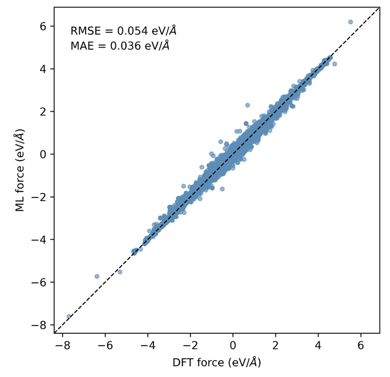
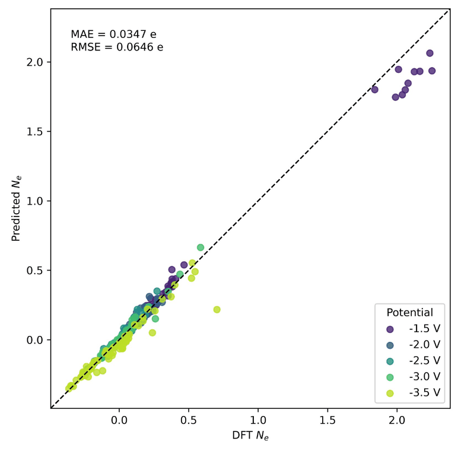

Computation & ML
Atomistic modeling for molten-salt reactor materials
Machine-learning potentials to understand chromium corrosion in molten salt reactors at the atomic scale.
- Built a workflow from molecular dynamics sampling to constant-potential (CP) DFT to machine-learning potential training
- Fine-tuned MACE foundation models on 600 DFT configurations of molten LiF
- Generated 245 CP-DFT data for a Cr–molten LiF interface and trained a CP-MACE model
Goal
Chromium corrodes in molten salts through an electrochemical reaction (Cr → Cr²⁺ + 2e⁻). Since simulating the full redox reaction is very difficult, this project models only the Cr oxidation half-cell at a fixed electrode potential, using constant-potential methods. To our knowledge, these methods had been developed for water-based interfaces but not for molten salts. The goal was to build constant-potential ML potentials for metal–molten salt interfaces.
Approach
- Generated diverse Cr(100)–molten LiF interface structures with molecular dynamics at 1200 K
- Fine-tuned MACE foundation models (MPA-0, MH-1) to improve molten-salt density
- Ran CP-DFT (GPAW, solvated jellium model) at 1.5–3.5 V, after convergence tests
- Trained CP-MACE to predict energy, forces, and electrode potential
Results
- Established and validated the full CP-DFT → CP-MACE workflow on HPC systems
- CP-MACE reproduced CP-DFT forces with a 36 meV/Å error and electron numbers with a 0.035 e error across five electrode potentials
- Found that dispersion (D3) correction is key for molten LiF density, and that the MACE-MH-1 foundation model (OC20 head) best captures Cr–F interactions
- Identified an implicit-solvent cavity issue in CP-DFT and tested parameter fixes

